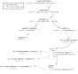

Coding
Building the guide
cargo install mdbook
(cd mdbook && mdbook build)
firefox build/guide/index.html
Building the rust docs
(cd src && cargo doc --workspace --exclude shadow-tests)
Generating compiler command database
Many tools benefit from a compiler command
database, conventionally in a
file called compile_commands.json. If shadow's setup script finds the
bear tool on your PATH, it will
automatically use it to create and update build/compile_commands.json when
running setup build.
Files and descriptors
Shadow currently has two ways of simulating descriptors. The first is
LegacyDescriptor which is written in C and is used for
most descriptor/file types (IP sockets, epoll, files, etc). With this type, the
epoll file / posix description and its descriptor live in the same object. The
second way of simulating descriptors is in Rust, where we have a File
type that can be referenced by many Descriptor objects. This
allows us to easily implement dup() for descriptors implemented with
this new code. Our plan is to move existing legacy descriptors over to these
new Rust file types.
Platform (libc and Linux) crates
We use several Rust crates for accessing platform functionality and definitions. Roughly from lowest-level to highest-level:
-
Our
linux-apicrate provides fairly low-level bindings over the Linux kernel headers, and a fewnix-style higher-level wrappers. It does not depend onstdorlibc. It also re-exports these definitions as a C library that can be used without creating conflicts with libc headers or linux system headers. Use this when working with the syscall ABI (such as when implementing syscall handlers), for internal parameters and state that are likely to interact with the syscall ABI (such as file states), and for making syscalls when none of the higher-level crates are suitable (see below). -
libcprovides fairly low-level bindings of system libc standard headers. If you need syscall-level ABI-compatibility, uselinux-apiinstead. If you don't, prefer one of the higher-level crates. -
nixprovides a safer and more Rust-idiomatic layer on top of thelibccrate, as well as adapters for underlyinglibcdefinitions. There's currently a lot of usage of this in Shadow, but we're working on moving away from it (see #3345). In most scenarios, one of the other crates mentioned here is a more appropriate choice. -
rustixprovides a similar API tonix, but can be configured not to depend onstdorlibc. This is useful in code that's linked into Shadow's shim, where we don't want to depend onstdorlibc. -
Rust's
stdcrate provides, well, the standard way of interacting with the platform, in a portable and Rust-idiomatic way. This is generally the right choice for code that doesn't run in Shadow's shim, in places we're not concerned about the precise syscalls that get executed.
When choosing which one to use:
-
For code that will be linked into shadow's shim, prefer
rustix. In cases whererustixdoesn't provide the desired functionality, or in C code, or when we need precise control over what syscall is made with what parameters, uselinux-api.We want to minimize, and ideally eliminate, usage of
libcfrom the shim.libchas global state that can easily become corrupted when we use it from the shim, which isLD_PRELOADed into managed programs. This is especially because much of the shim executes in the context ofSIGSYSsignal handlers, meaning we might already be in a non-reentrant, non-async-signal-safe libc function higher in the stack. See also https://github.com/shadow/shadow/milestone/54. -
For shadow's syscall handler implementations, prefer
linux-api.Since we are intercepting and implementing at the syscall level, the interface we are implementing is the Linux syscall ABI interface. Therefore we should be careful to use Linux's definitions for the parameters and return values. While types and constants in libc are often equivalent to kernel types and constants with the same names, there are many known cases where they aren't, and in general there's no guarantee even that one that is consistent today will remain consistent tomorrow. See also https://github.com/shadow/shadow/issues/3007.
This also applies when implementing a syscall by delegating to the host system. For example suppose we implement a
fcntlsyscall by by making a nativefcntlsyscall on the native file descriptor. Making the syscall directly is the most straightforward way to "pass through" exactly the original intended semantics. If we use a higher level interface, evenlibc, we have to be careful about translating the parameters and return values back and forth between the two different API layers. -
For code that runs in the shadow process, where we are acting as a "normal" program that wants to interact with the kernel, generally prefer the highest-level interface that provides the necessary functionality. e.g. when creating worker threads in Rust, we generally use
std::thread; there's no reason to use one of the lower level crates. Occasionally we need some functionality not provided instdthough, in which case it makes sense to drop down to one of the lower level crates. -
In tests, any of the above can make sense. In places we're specifically trying to test shadow's emulation of some functionality, making direct syscalls, e.g. with the
linux-apicrate orlibc'ssyscallfunction, is the most direct and precise approach. On the other hand, we often want to test higher level interfaces as a form of integration testing, since those are more typically what managed programs use. We usually focus on testing at thelibcinterface, since most managed programs use that interface, and it's low-level enough to be able to control and understand what's happening at the syscall level. For incidental system functionality in tests (e.g. creating a temp file, in a test that isn't specifically trying to test that functionality) it usually makes sense to use whatever interface is most idiomatic and convenient.
deny(unsafe_op_in_unsafe_fn)
All crates should use #![deny(unsafe_op_in_unsafe_fn)]. When adding a new
crate, remember to add this to the lib.rs or main.rs.
[https://github.com/rust-lang/rfcs/blob/master/text/2585-unsafe-block-in-unsafe-fn.md]
No longer treat the body of an unsafe fn as being an unsafe block. To avoid a breaking change, this is a warning now and may become an error in a future edition.
This helps make it clearer where "unsafe" code is being used and can make reviewing code easier.